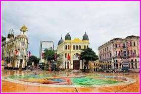
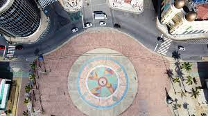

Imagens
 Uma vista deslumbrante do Marco Zero no Recife.
Praça Barão do Rio Branco
A praça tem o nome original de Praça Barão do Rio Branco, todavia ficou conhecida como Praça do Marco Zero pelo fato de que nela encontra-se o quilometro zero das estradas de Pernambuco. É formada por um marco de cor vermelha doado pelo Clube do Automóvel. Na lateral da praça encontra-se a estatua do Barão do Rio Branco em bronze, com 2,80m de altura, do escultor Felix Charpentier. Já no centro pode ser vista a rosa dos ventos do pintor Cícero Dias. Nos períodos de momo a praça funciona como quartel general do carnaval multicultural do Recife.
A história
O Bairro do Recife, no centro da cidade, foi a trilha adotada para expandir o crescimento da área do Estado de Pernambuco, que se iniciou com a ocupação de povos europeus. Famoso por ser o bairro mais antigo da cidade, a expansão dele se deu de forma mais pronunciada a partir de 1630, no contexto da imigração holandesa, com avanços que foram mantidos mesmo após a retomada da posse das terras pelos portugueses. Na época, houve até mesmo períodos em que o antigo bairro chegou a apresentar elevada densidade populacional. A partir de 1910, o bairro passou por outro período marcante, fruto de obras que buscaram tanto modernizar o porto ali presente quanto erguer novas construções, fazendo que cerca de dois terços do bairro tivessem de ser demolidos para dar espaço a novas edificações.